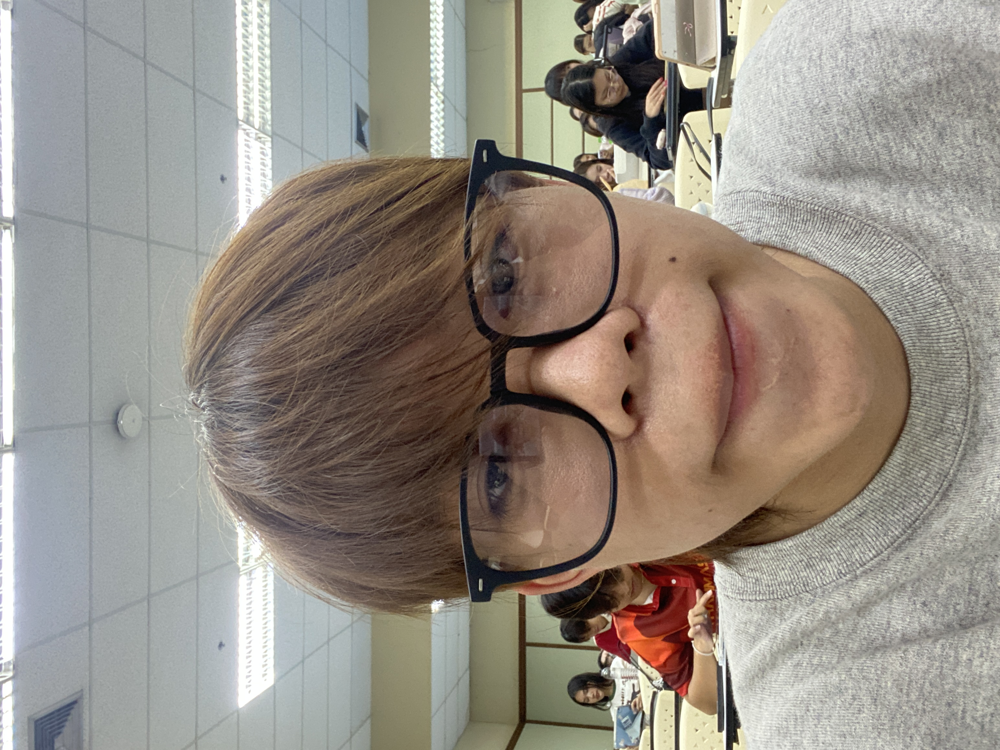

Instagram: @_s1rxsj
นายสาริศ แซ่ตั้ง เรียกบิ๊ก หรือจีนก็ได้ เลขรหัสนักศึกษา 6909650746 ไปกินเหล้าทักมาเลย
ผมเป็นคนชิว สบายๆ อะไรก็ได้ ชอบกินเหล้าเป็นชีวิตจิตใจ ว่างๆ ชอบไปเล่นบาสเกตบอลกับเพื่อนที่สาขา

งานนี้บิ๊กสร้างเว็บไซต์ Learning Portfolio แบบหน้าเดียว เพื่อที่จะแนะนำตัวเองให้กับอาจารย์ให้ได้รู้จักถึงตัวตนของผมและนำเสนอสิ่งที่อาจารย์ได้สอนมา